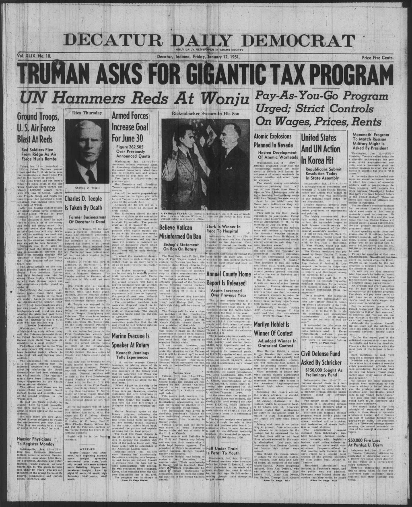
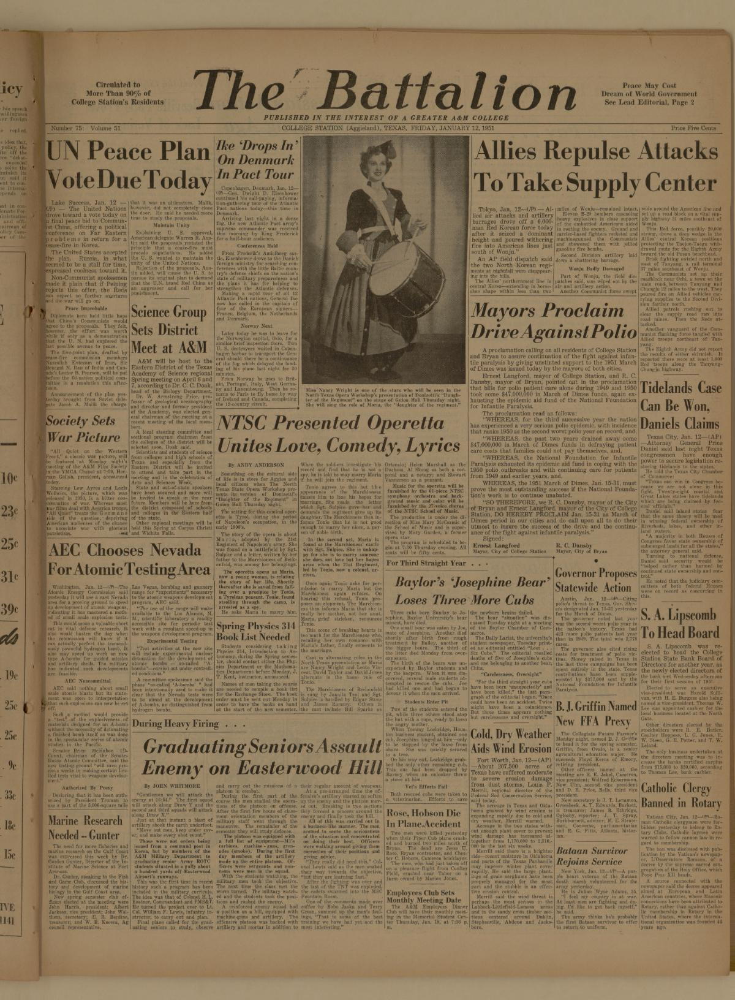

HN HN-582 · January 12, 1951 · Science, Invention & Technology > Physics, Chemistry & Material Sciences > Nuclear science
Source: Decatur Daily Democrat, p. 1 — original page; Department of Energy, Nevada proving ground history.
Report: “Atomic Explosions Planned in Nevada†stated the Atomic Energy Commission intended to use a military range near Las Vegas, while declining to announce the first detonation date.
Assessment: The first Nevada Proving Grounds nuclear test, Able, occurred January 27, 1951. The newspaper describes a plan, not a blast already witnessed on January 12. Long-term downwind exposure and public-health consequences require separate technical records rather than the early military statement.
Identity-review candidate peers: HN-586:Algorithmic
Authentic images retrieved from Hoosier State Chronicles (Indiana State Library) and Texas A&M University Libraries (Open ONI). Article crops are located using the archive's own OCR word coordinates and rendered at native crop resolution; article clips are assembled from the archive's own article-block images; page images marked "archive tiles" are stitched from the archive's own tiled page service at its 256-px tile cap; page images marked "issue PDF" are single pages rasterised from the archive's own issue PDF, with the page chosen by matching the headline against the PDF's text layer; page scans are reduced-size access renditions. No images were generated, mocked, or retouched.


Not yet acquired. Queued for provider-specific acquisition testing (see source-acquisition manifest).
URL (preserved verbatim): https://newspapers.library.in.gov/?a=d&d=DCDD19510112.1.1
Saved research report: Historical_Newspaper_Event_Research_578-602_2026-10-23.md
Evidence note: A newspaper report means a historical publication made a claim; it does not establish that claim as fact. Contemporary reporting is separated from later scholarly context and our own assessment.